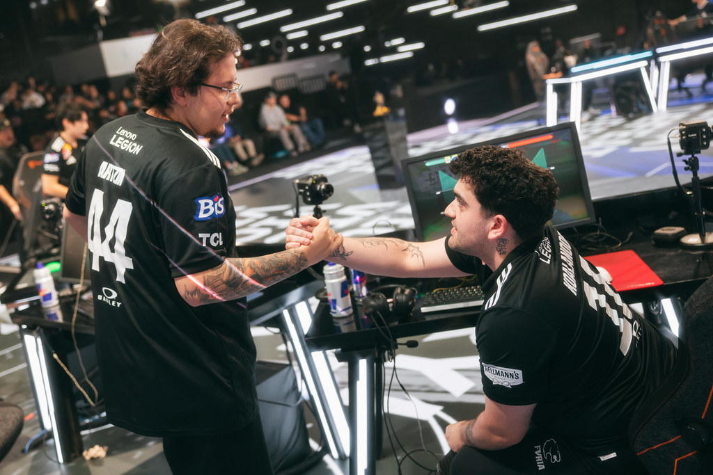
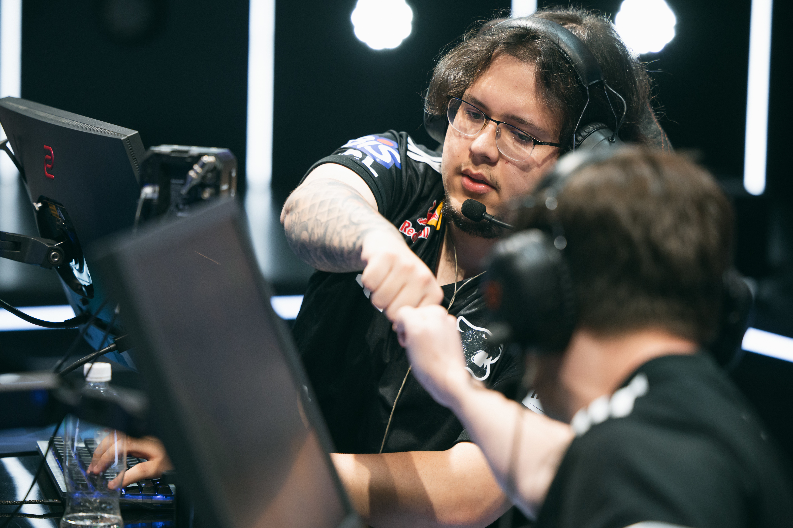

E-Sports News
VALORANT
ArtziN assume liderança na FURIA e fala sobre exigência no Masters Santiago: “Quero que se divirtam”

Na tarde desta sexta-feira (27), Arthur “artziN” Araujo foi um dos representantes da FURIA na coletiva de imprensa que dá início ao VALORANT Masters Santiago 2026. Único jogador brasileiro na equipe titular da Pantera, o capitão falou sobre seu papel de liderança no time e como sua experiência pode agregar durante a campanha no torneio internacional a ser disputado no Chile.
Ao ser questionado pela equipe do VZone sobre o que artziN pode agregar ao time da FURIA no Masters de Santiago, o brasileiro foi claro ao dizer que sua experiência é o maior trunfo nesse momento. “O que eu posso ajudar, com certeza, é um pouco da experiência. Explicar um pouco como funcionam os campeonatos internacionais, porque, querendo ou não, o nível é diferente da liga regional que a gente joga” — destacou.

FOCO NA LIDERANÇA
No entanto, Arthur entende que seu grande papel como capitão e líder dessa equipe é orientar os mais novos e indicar os caminhos corretos para que todos se sintam à vontade e confortáveis para a disputa do torneio. Afinal, será a primeira vez em que Torogul “alym” Baidyldaev, GianFranco “koalanoob” Potestio e Michael “nerve” Yerrow disputarão uma competição internacional em suas carreiras.
QUANDO A FURIA ESTREIA NO MASTERS SANTIAGO?
Ainda não há uma data exata para a estreia da FURIA no Masters de Santiago. Isso acontece porque a Pantera se classificou ao torneio como Seed 1 das Americas e, portanto, começará sua caminhada direto dos playoffs, enquanto as demais equipes terão de passar por uma Fase Suíça.
Sentinels anuncia saída de Kaplan e chegada de novo treinador

A Sentinels anunciou no último domingo (22) a saída de Adam “Kaplan” Kaplan do cargo de treinador principal de VALORANT. A demissão ocorre após a má campanha da equipe no VCT 2026: Americas Kickoff, onde os Sentinels terminaram entre o nono e décimo lugares e não conseguiram garantir vaga no Masters Santiago.
Kaplan havia chegado à organização em 2022 como Strategic Coach antes de assumir o comando principal da equipe. Confira os principais marcos de sua passagem pela Sentinels:
- 2022 — Ingresso na Sentinels como Strategic Coach
- 2024 — Conquista do Masters Madrid como treinador principal
- 2026 — Eliminação no VCT Americas Kickoff e desligamento da organização
Rob Moore, CEO da Sentinels, publicou um longo comunicado em suas redes sociais reconhecendo o trabalho de Kaplan, mas justificando a decisão pela trajetória recente. A organização também publicou um vídeo de despedida em homenagem ao treinador, agradecendo pelos anos de dedicação